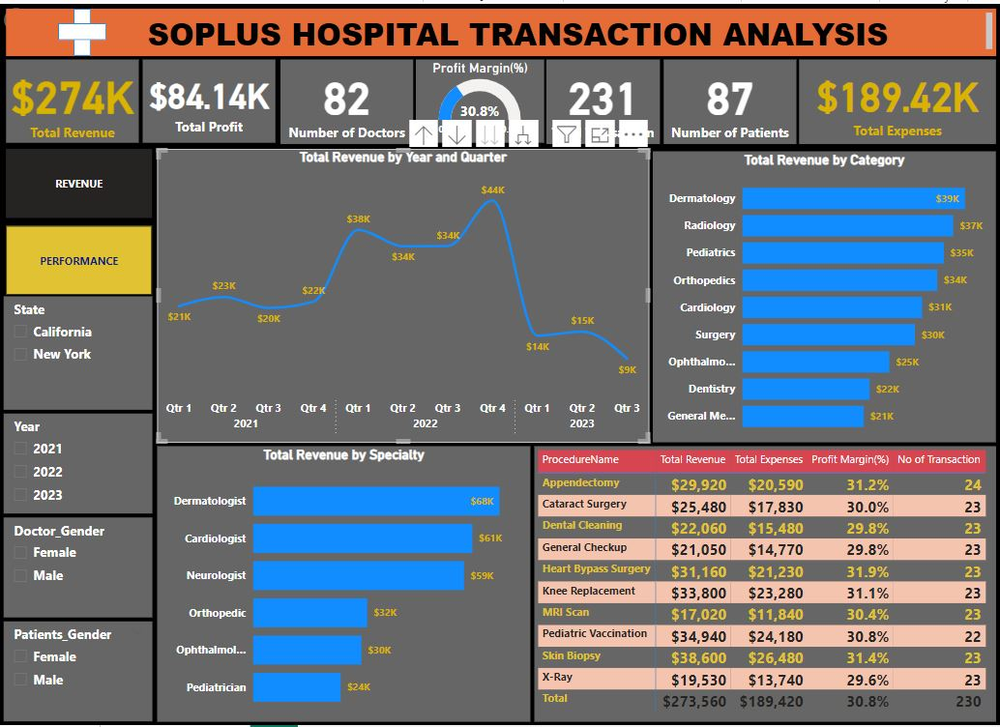
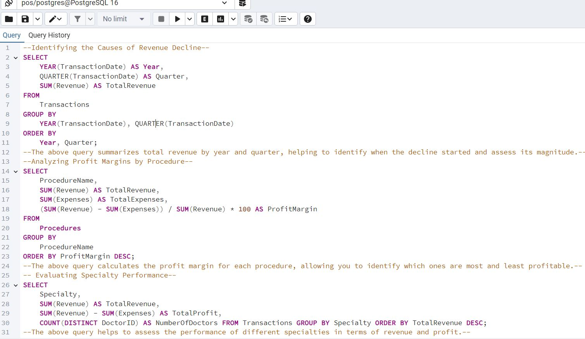

SOPLUS HOSPITAL TRANSACTION ANALYSIS
BUSINESS PROBLEM
"Soplus Hospital Transaction Analysis," presents a comprehensive overview of the hospital’s financial performance. It includes key metrics such as Total Revenue, Total Profit, Number of Doctors, Number of Patients, Profit Margin, and Total Expenses. The dashboard also provides detailed insights into revenue by quarter, category, specialty, and individual medical procedures. Based on the data visualized in the dashboard, the business problem can be identified as:
- Revenue Decline: There is a noticeable decline in total revenue starting from Q4 2022, dropping significantly by Q3 2023.
- Specialty and Procedure Profitability: Certain specialties and procedures have lower profit margins, indicating potential inefficiencies or pricing issues.
INSIGHTS AND FINDINGS
An in-depth analysis of the dashboard reveals the following critical insights:- Revenue Trends: Revenue increased in 2022 but sharply declined in 2023, with Q3 2023 being particularly low.
- Specialty Performance: Dermatology, Radiology, and Pediatrics are the top revenue-generating categories.
- Procedure Profitability: Heart Bypass Surgery, Skin Biopsy, and Knee Replacement have the highest profit margins, while procedures like MRI Scan have lower margins.
- Doctor and Patient Distribution: There is no specific breakdown by state, year, or gender in this view, but these filters are available to explore more granular insights.
SQL Solutions
To address the business problems, I use the following SQL queries to dive deeper into the data. Here are some SQL queries that i used : Dashboard Preparation Process
- Data Collection: The data came from various hospital records, including patient visits, procedure billing, doctor performance, and financial transactions.
- Data Cleaning: The Data was cleaned and standardized, ensuring consistency in fields like procedure names, dates, and revenue figures.
- Data Integration: The cleaned data is then integrated into a centralized database or a data warehouse.
- Data Modeling: Relationships between tables (e.g., Transactions, Procedures, Doctors) are established, often using SQL, to support the necessary analysis.
- Dashboard Development: Power BI was used to create the dashboard, with the above SQL queries running in the background to populate the visualizations.
RECOMMENDATIONS
Based on the insights derived from the dashboard, the following recommendations are made:- Investigate Revenue Decline: The significant drop in revenue in 2023 should be analyzed. Factors such as changes in patient volume, pricing strategies, or external economic conditions might be affecting performance.
- Optimize Low-Margin Procedures: Consider revising pricing or cost structures for procedures with lower profit margins like MRI Scans to improve overall profitability.
- Enhance High-Revenue Specialties: Invest in marketing and resources for top-performing specialties like Dermatology and Radiology to maximize revenue potential.